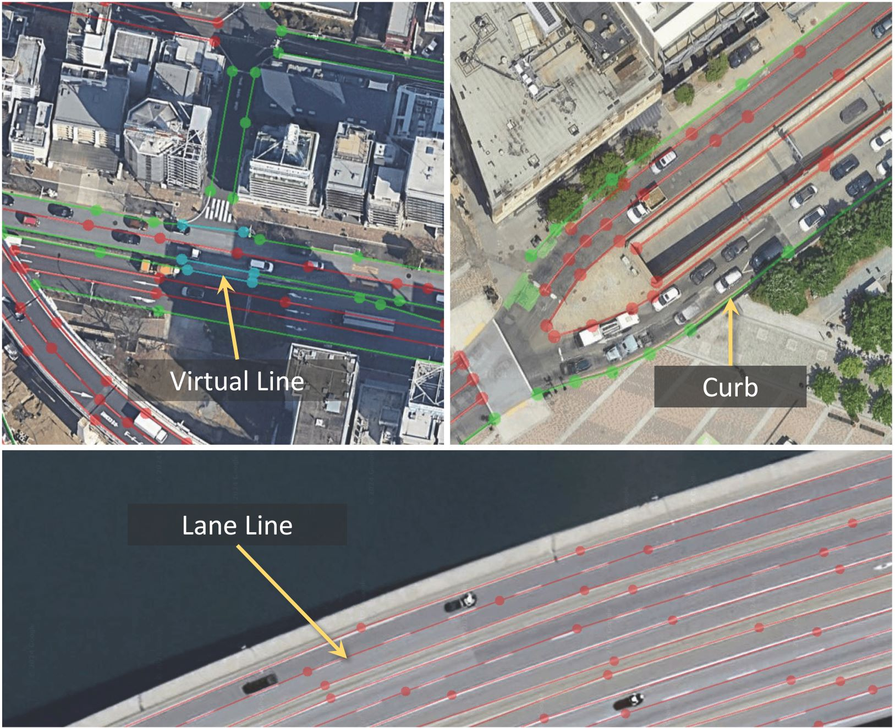

Description
The dataset contains 3,787 high-resolution satellite images with fine-grained annotations, covering diverse geographic locations and popular driving datasets. It can be used for large-scale map construction and downstream tasks like autonomous driving. The images are collected from Google Maps at level 19 resolution (0.3m/pixel) and level 20 resolution (0.15m/pixel), we denote them as OpenSatMap19 and OpenSatMap20, respectively. For OpenSatMap19, the images are collected from 8 cities in China, including Beijing, Shanghai, Guangzhou, ShenZhen, Chengdu, Xi'an, Tianjin, and Shenyang. There are 1806 images in OpenSatMap19. For OpenSatMap20, the images are collected from 18 countries, more than 50 cities all over the world. There are 1981 images in OpenSatMap20. The figure below shows the sampling areas of the images in OpenSatMap.
Examples of Annotated Images
These are two examples of annotated images from OpenSatMap20. Or you can play it in the

Example 1: Annotated image from OpenSatMap20. The image is collected from Singapore Onenorth (nuScenes).


Example 2: Annotated image from OpenSatMap20. The image contains a flyover and roundabout, which is complex.
Image Source and Usage License
The OpenSatMap images are collected from Google Maps. The dataset will be licensed under a Creative Commons CC-BY-NC-SA 4.0 license and the usage of the images must respect the Google Maps Terms of Service.Line Category and Attribute
We use vectorized polylines to represent a line instance. We first categorize all lines into three categories: curb, lane line, and virtual line. A curb is the boundary of a road. Lane lines are those visible lines forming the lanes. A virtual line means that there is no lane line or curb here, but logically there should be a boundary to form a full lane. Please refer to the figure below for examples of these three categories.

For each line instance, we provide eight attributes: color, line type,number of lines, function,
bidirection, boundary, shaded, clearness.
Specifically, they are:
- Color: The color of the line. It can be white, yellow, others or none.
- Line type: The type of the line. It can be solid, thick solid, dashed, short dashed dotted, others or none.
- Number of lines: The number of the line. It can be single, double, others or none.
- Function: The function of the line. It can be Chevron markings, no parking, deceleration line, bus lane, tidal line, parking space, vehicle staging area, guide line, changable line, lane-borrowing line, others or none.
- Bidirection: Whether the line is bidirectional. It can be true or false.
- Boundary: Whether the line is a boundary. It can be true or false.
- Shaded: The degree of occlusion. It can be no, minor or major.
- Clearness: The clearness of the line. It can be clear or fuzzy.
Annotation Format
The annotations are stored in JSON format. Each image is annotated with "image_width", "image_height", and a list of "lines" where the elements are line instances. Each line is annotated with "category", "points", "color", "line_type", "line_num", "function", "bidirection", "boundary", "shaded", and "clearness".{"img_name": {
"image_width": int,
"image_height": int,
"lines": [
{
"category": str,
"points": [
[float, float],
[float, float],
[float, float],
...
],
"color": str,
"line_type": str,
"line_num": str,
"function": str,
"bidirection": bool,
"boundary": bool,
"shaded": str,
"clearness": bool
},
{
"category": str,
"points": [
[float, float],
[float, float],
[float, float],
...
],
"color": str,
"line_type": str,
"line_num": str,
"function": str,
"bidirection": bool,
"boundary": bool,
"shaded": str,
"clearness": bool
},
...
]
}
}Meta data
The meta data of GPS coordinates and image acquisition time are also provided. The meta data is stored in a JSON file.{
"img_name": [
{
"centerGPS": [float, float],
"centerWorld": [float, float],
"filename": str
},
{
"centerGPS": [float, float],
"centerWorld": [float, float],
"filename": str
},
...
]
...
}